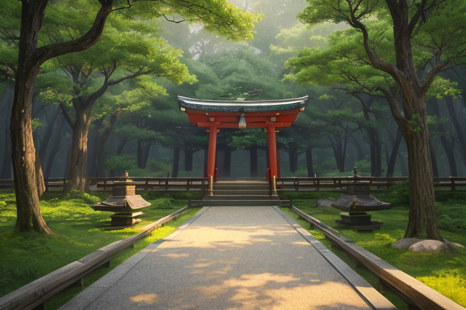
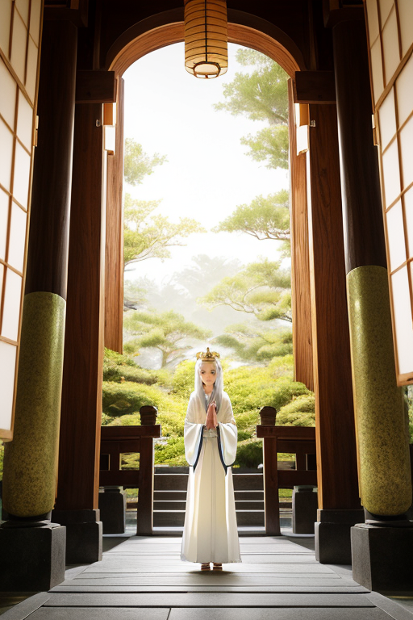
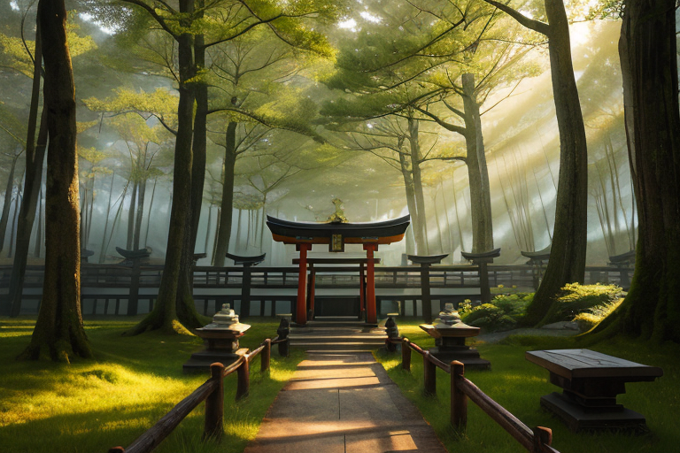
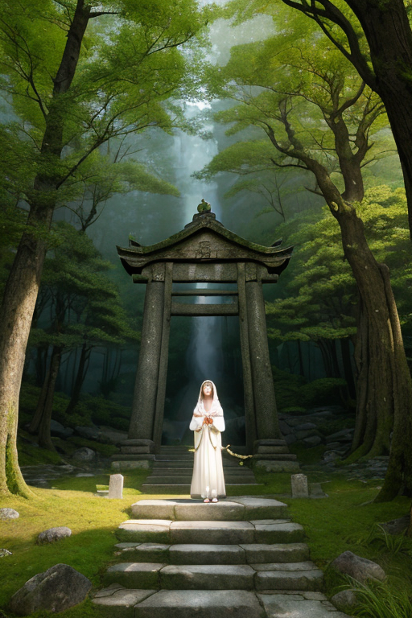
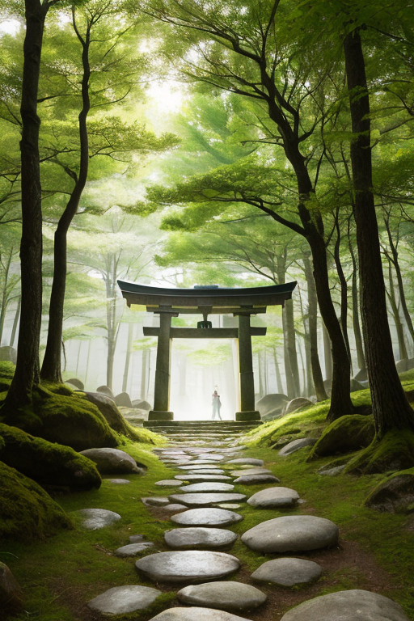

第一章 現実の三重
あなたはまだ気づいていない。この土地にも、王がいることを。
伊勢神宮の森は、深い静寂に包まれている。参道を覆う巨木の梢を、風がゆっくりと通り抜ける。その音は、訪れる人々のざわめきや、鈴の音さえも吸い込んでしまうほどだ。鳥居をくぐり、白砂の上を歩く足音だけが、この空間で許された唯一のリズムのように響く。ここでは、祈りが空気そのものになっている。手を合わせる人々の背中には、それぞれの人生の重みが、言葉にならない形でにじみ出ていた。病気平癒、家族の安全、受験合格、あるいはただ、この瞬間の静けさへの感謝。無数の願いが、清らかな流れのように本殿へと向かう。
その祈りの流れを、誰よりも厳粛なまなざしで見つめている者がいた。白と金の衣をまとった王、ミエリア・サンクトゥムである。彼は、この神域に満ちる「祈りの波長」の管理者だった。人々の内から湧き上がる感情の密度は、時にこの土地の地殻にかかるストレスよりも複雑で、鋭い。彼の仕事は、その膨大な祈りのエネルギーが、地盤の微細な「歪み」と共鳴して増幅しないよう、静かに調整することである。

第二章 歪みの兆候
神域の静寂は、完璧ではなかった。ミエリア・サンクトゥムは、閉じた眼の奥で、無数の祈りの波長を感じ取っていた。本殿前で深く頭を垂れる老人の「家族の平癒を」。熊野古道を歩む若者の「自分を見失わないように」。志摩の海で真珠を育てる女性の「この美しさが続きますように」。一つひとつは清らかで、尊い。
しかし、近年、ある種の祈りが増えていることに、王は気づいていた。それは「願望」に近い。自己の利益や、ただの安心を求める、鋭くせわしない波長だ。伊勢神宮の式年遷宮が近づくにつれ、観光客の増加と共に、その種の「祈り」は神域の空気を、かすかに濁らせ始めていた。それは地盤の微細な歪みと、危うく共鳴しようとする、かすかな軋みの音だった。
「歪みは、外側からだけではない」
傍らに立つ主席妖精サンクティアが、厳粛な声で呟いた。彼女の手には、聖域の安定を測る光の輪が、ほとんど感知できないほど、微かに震えていた。祈りそのものの質が、この神聖な場のバランスを、内側から揺るがし始めている。王は、金色の瞳を静かに開いた。

第三章 王の葛藤
歪みは、確かに内側からも来ていた。王は、伊勢神宮の森の静寂の中で、目を閉じた。手に取るのは、巡礼者の落とした、小さな絵馬の破片。その表面に込められた願いの残滓は、切実で、時に利己的で、そして深く孤独だった。「家族の健康を」「試験に合格しますように」「あの人を忘れられますように」。一つ一つの祈りは、神域の空気を濃く、重くしていた。それは物理的な歪みではない。人の心が発する、目に見えない圧力の波だ。
祈りは、誰のためか。
王は自問した。本来、王は祈りを評価せず、ただその「存在」を調整のパラメータとして扱うべき存在だ。しかし、この地に降り立ち、幾星霜を経るうちに、その祈りの奔流は、王の内側に「問い」を生んでいた。願いを叶えるためではなく、願いを抱くことそのものの重さに、王は気づき始めていた。それは、感情という名の歪みだった。

第四章 妖精との対話
「王よ。祈りは、誰のためか。」
サンクティアの声は、熊野古道の苔むした石畳に染み入る朝露のようだった。彼女は、王の内側に生じた「問い」の微かな振動を、聖域波の安定装置として感知していた。
「ここに流れる祈りは、多くが『他者』のために捧げられています。旅の安全を、病める家族の平癒を、遠くの誰かの幸せを。」イセリアが続けた。彼女の周りには、伊勢路を歩む巡礼者たちの、無数の願いが淡い光の粒となって漂っていた。「しかし、祈りを捧げるその行為そのものが、祈る者の内側に静寂を生み出します。願いの内容がどうあれ、祈りは魂の『歪み』──焦りや悲しみや孤独──を、一時的にせよ整えるのです。」
王は黙って聞いた。赤目四十八滝の轟音が、背景の静寂を引き立てる。
「我々が保護し、安定させているのは、この『行為』が生み出す精神的な均衡です。」サンクティアは厳粛に言った。「祈りが叶うか否かは、我々の管轄外です。我々が調整するのは、祈りがもたらす内面の波長。それが、この土地の物理的な歪みを、ほんのわずかだが和らげる共鳴となるのです。」
祈りは、他者のためであると同時に、己のためでもある。その両義性こそが、神域の複雑で深い感情密度を形作り、王に「問い」を芽生えさせた。王は、自らが調整しているものが、単なる物理法則ではなく、人の心の織りなす、か細くも尊い力学であることを、静かに認めた。

第五章 微調整と余韻
熊野古道、伊勢路の石畳は、長い年月と無数の巡礼者の足裏で磨かれ、仄かに光を帯びていた。ミエリア・サンクトゥムは、その石の一つに触れ、巡礼者たちが残していった祈りの「余韻」を感じ取る。それは、物理的な歪みそのものを消す力はない。しかし、祈りが生み出す精神的な波長の共鳴は、地殻に伝わるストレスの波紋を、ごくわずかではあるが、乱さずに整える。津波の先端を数秒遅らせ、崩れかけた岩盤のバランスを一瞬だけ保つ。それが、この神域の王に許された、唯一の介入だった。
「祈りは、誰のため？」
かつては自明だった問いが、今は重い。祈る者のためか、祈られるもののためか。あるいは、この「間」そのもののためか。王は答えを持たない。ただ、祈りが生み、妖精たちが整えるその微かな波が、この土地の静寂を守る一要素であることを知っている。それは、ヒーローの仕事ではなく、無名の調整者のそれだ。
やがて、王の手が石から離れる。調整は終わった。古道には、変わらぬ深い静寂が戻り、次の巡礼者を待つ。祈りは続き、王の問いもまた、静かに続いていく。
あなたの町にも、王がいる。